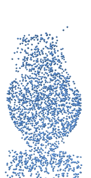
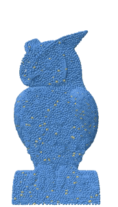

We propose accelerating the simulation of Lagrangian dynamics, such as fluid flows, granular flows, and elastoplasticity, with neural-operator-based reducedorder modeling. While full-order approaches simulate the physics of every particle within the system, incurring high computation time for dense inputs, we propose to simulate the physics on sparse graphs constructed by sampling from the spatially discretized system. Our discretization-invariant reduced-order framework trains on any spatial discretizations and computes temporal dynamics on any sparse sampling of these discretizations through neural operators. Our proposed approach is termed Graph Informed Optimized Reduced-Order Modeling or GIOROM. Through reduced order modeling, we ensure lower computation time by sparsifying the system by 6.6-32.0×, while ensuring high-fidelity full-order inference via neural fields. We show that our model generalizes to a range of initial conditions, resolutions, and materials. The code and the demos are provided at https://github.com/HrishikeshVish/GIOROM.
The overall architecture of GIOROM. The neural operator Gθ predicts the acceleration of a Lagrangian system Atk at time tk from the past w velocity instances Vtk−w:k . The positions are derived through Euler integration. The neural field is used to efficiently evaluate the deformation field at arbitrary locations.
|  |  |

|
| Neural Operator Inference | Neural Field Upsample | Rendered Sim |
The below videos highlight the performance in different settings.
| Full-Order Simulations | |||
| Ground Truth Comparisons (Yellow:GT) | |||
| ROM Simulations |
Our approach yields consistent results across discretizations
@article{viswanath2024reduced,
title={Reduced-Order Neural Operators: Learning Lagrangian Dynamics on Highly Sparse Graphs},
author={Viswanath, Hrishikesh and Chang, Yue and Berner, Julius and Chen, Peter Yichen and Bera, Aniket},
journal={arXiv preprint arXiv:2407.03925},
year={2024}
}